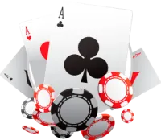
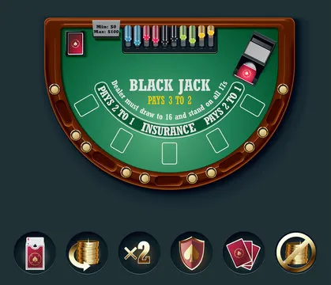
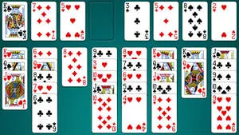
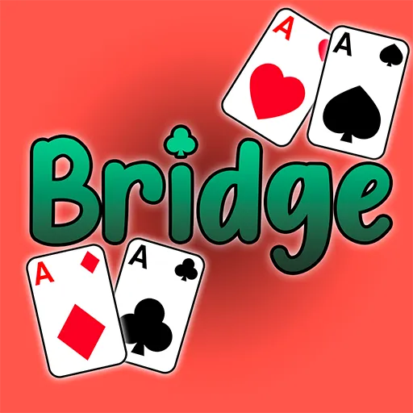
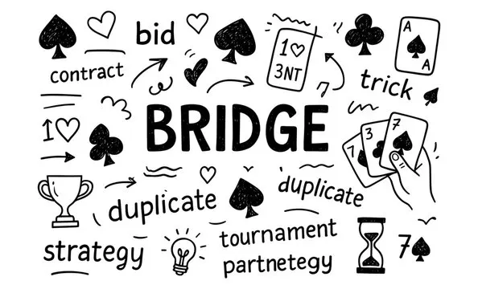

Poker
Poker is a family of card games in which
players compare different combinations
of cards. Common combinations include
pairs, three of a kind, straights,
flushes and full houses.

Different versions of poker exist,
including Texas Hold'em and Five-Card
Draw. Each version has its own rules
concerning the number of cards
distributed and how hands are formed.
Understanding card combinations,
probability and the rules of each
variation can help develop mathematical
reasoning and logical thinking.
Blackjack
Blackjack is a card comparison game
based on numerical values. The main
concept is comparing card totals
with the number 21.

Number cards have their printed value,
while kings, queens and jacks count
as ten. An ace can represent either
one or eleven, depending on the total.
The game provides an interesting
example of how arithmetic, probability
and decision-making can be represented
through playing cards.
Solitaire
Solitaire is a single-player card
puzzle in which cards are arranged
according to specific rules.
It is one of the most recognizable
card games in the world.
In the popular Klondike variation,
cards are organized into sequences
while the player works toward
completing four foundation piles.

Solitaire encourages patience,
concentration and planning.
It can be played using a physical
deck or a digital version.
Bridge
Bridge is a partnership card game
played by four people divided into
two teams. Partners sit opposite
each other and cooperate during play.

The game includes a bidding phase
followed by a card-playing phase.
Players attempt to achieve the
objective established by the
winning bid.

Bridge is known for its emphasis
on communication, memory, teamwork
and strategic thinking.